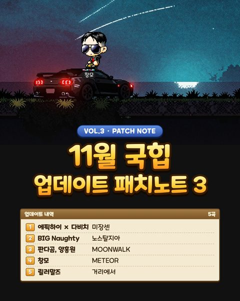
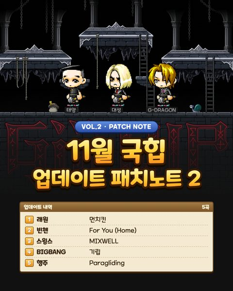
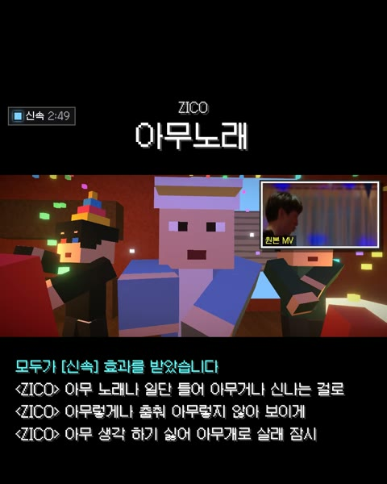
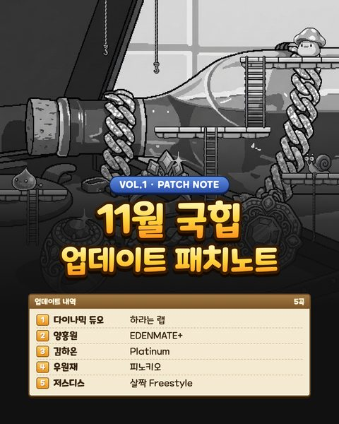

케이셉 국힙 @ksap_gookhip
2026.11.24 첫 게시
국힙 플레이리스트는 이미 많아서, 노래를 '듣기만' 하는 채널로는 눈에 띄기 어렵습니다. 그래서 목표를 '보는 플레이리스트'로 정했습니다. 곡마다 앨범 표지를 메이플 맵으로, 아티스트를 메이플 캐릭터로 바꿔 게임 패치노트처럼 매주 업데이트합니다.
- 장르국내 힙합 플레이리스트 × 메이플스토리 게임 화면
- 게시월~목 곡 소개 · 금~일 뮤비 · 매일 밤 8시 30분
- 결과물곡 소개 5편(곡 25개 영상·썸네일) · 마인크래프트 뮤비 재현 11편 · 하이라이트·계정 가이드
피드
🎮 메이플 | 마크 국힙 플레이리스트 🎮월~목 곡 소개 | 금~일 뮤비밤 8시 30분 · 신청곡은 DM







실제로 만든 작품으로 꾸민 프로필 화면입니다(좋아요·팔로워 숫자는 넣지 않았어요).
왜 이렇게 만들고, 무엇을 목표로 하나
왜 메이플 화면인가 — 국힙을 듣는 20~30대에게 익숙한 게임 화면을 빌려, 처음 듣는 곡이라도 스크롤을 멈추게 하려고 했습니다. 곡을 모르는 사람도 '이 장면 뭐지?' 하고 들어와 끝까지 보게 만드는 것이 목표입니다.
왜 숨은 곡인가 — 유명한 곡은 어디서나 들을 수 있습니다. 아는 사람만 아는 곡을 골라 '이 계정에서만 알게 되는 곡'이 쌓이게 하고, 그것이 저장하고 팔로우할 이유가 되게 합니다.
왜 요일을 나누나 — 월~목은 곡 소개로 새 곡을 알리고, 금~일은 아는 곡의 뮤비 명장면을 마인크래프트로 재현해 다시 보게 합니다. 새로움과 반가움, 매주 돌아올 이유를 두 가지로 둡니다.
왜 신청곡을 받나 — 고정 댓글로 신청곡·주제를 받아 가장 많이 나온 것을 다음 편에 넣습니다. 보는 사람이 함께 만드는 플레이리스트가 되어 댓글·DM 참여가 자연스럽게 쌓이도록 했습니다.
만들 때 지키는 기준
가사와 소리가 어긋나면 — 팬이 올린 음원이 공식 음원보다 1.85초 밀려 있던 원인을 찾아냈고, 이후 '공식 음원 + 받아쓰기로 가사 시간 비교, 0.3초 넘으면 맞추고 렌더'를 기준으로 만들었습니다.
누가 부르는지 헷갈리면 — 목소리 비교 AI가 틀린 것을 확인한 뒤, 라이브 영상을 음원에 맞춰 가사 줄마다 화면을 뽑아 확인합니다. 그래도 애매하면 렌더 전에 확인받습니다.
캐릭터가 안 닮으면 — 1순위 앨범 표지, 2순위 아티스트 사진. 특징(앞머리·안경·모자)을 먼저 적고, 사진과 후보 6개를 나란히 놓은 비교표로 고릅니다.
이미지 생성 한도가 끝나면 — 유료 생성 한도를 넘으면 로컬 생성 모델로 자동 전환하고, 실제 게임 맵 바닥을 깔아 톤을 맞춥니다.
링크
새 창으로 열려요